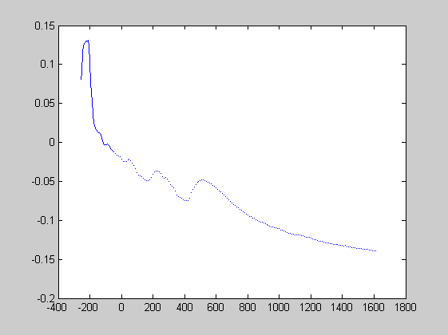

url of netCDF file with jarkus data
url = jarkus_url
url = p:\mcdata\opendap\rijkswaterstaat\jarkus\profiles\transect.nc
transect info
year = 2006; % year of sounding kustvak = 'Noord-Holland'; % area name transect = 3000; % alongshore coordinate
retrieve info about dimensions and variable names
info = nc_info(url);
derive the identifier of the parameter 'altitude'
altitude_id = strcmp({info.Dataset.Name}, 'altitude');
locate the relevant positions along the dimensions
id.time = (1970 + floor(nc_varget(url, 'time')/365)) == year; id.alongshore = nc_varget(url, 'areacode' ) == rws_kustvak(kustvak) &... nc_varget(url, 'alongshore') == transect; id.cross_shore = true(size(nc_varget(url, 'cross_shore')));
retrieve the transect data
remove 1 from start indices because netCDF is 0-based while matlab is 1-based. OETSETTINGS be default selects the netCDF java library the removed substitus NaN for missing values (e.g. -9999)
x = nc_varget(url, 'cross_shore'); start_altitude = [find(id.time , 1,'first') ... find(id.alongshore , 1,'first') ... find(id.cross_shore, 1,'first')] - 1; count_altitude = [ sum(id.time )... sum(id.alongshore )... sum(id.cross_shore)]; z = nc_varget(url, 'altitude', start_altitude, count_altitude);
plot the transect
figure plot (x, z); xlim ([-400 1800]); xlabel('crossshore [km]') ylabel('z [m]') title ([kustvak ' raai ' num2str(transect) ' in ' num2str(year)]) grid on